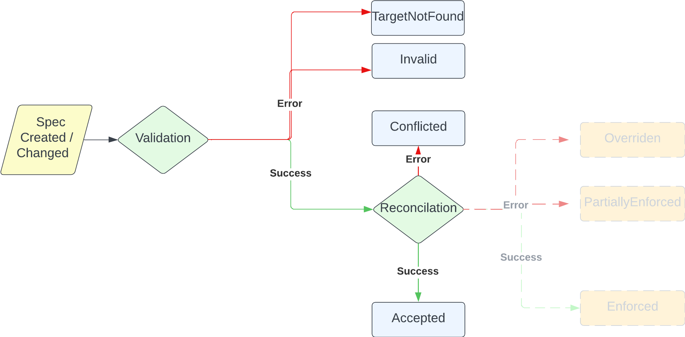
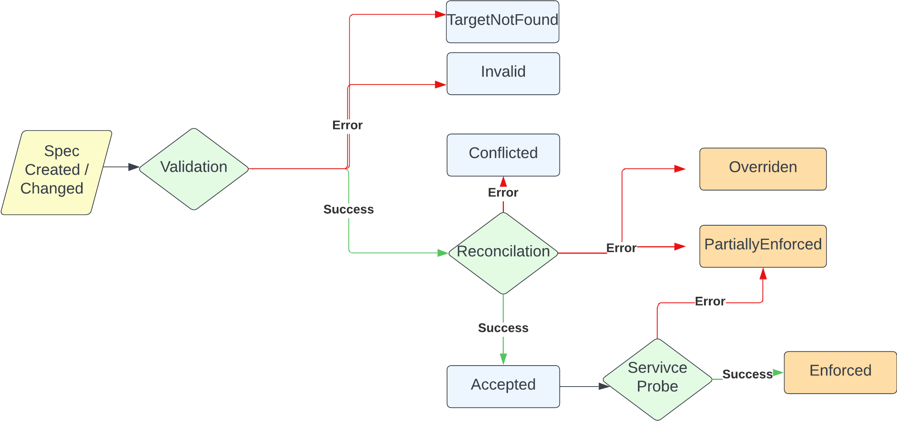

Policy Status¶
- Feature Name:
policy_status_states - Start Date: 2023-02-03
- RFC PR: Kuadrant/architecture#0009
- Issue tracking: Kuadrant/architecture#0038
Summary¶
This RFC proposes a new design for any Kuadrant Policy (RateLimitPolicy, AuthPolicy, etc..) status definition and transitions.
Motivation¶
At the time being, the RateLimitPolicy and AuthPolicy status doesn't clearly and truthfully communicate the actual state of
reconciliation and healthiness with its operator managed services, i.e., the Rate Limit service ("Limitador") and
the Auth service ("Authorino"), referred to as "Kuadrant services".
As a consequence, misleading information is shared causing unexpected errors and flawed assumptions.
The following are some issues reported in relation to the aforementioned problems:
- https://github.com/Kuadrant/kuadrant-operator/issues/87
- https://github.com/Kuadrant/kuadrant-operator/issues/96
- https://github.com/Kuadrant/kuadrant-operator/issues/140
Guide-level explanation¶
This design for setting the status of the Kuadrant policy CRs is divided in 2 stages, where each stage could be applied/developed in order and would reflect valuable and accurate information with different degrees of acuity.
The Policy CRD Status in the following diagrams are simplified as states, which in the Reference-level explanation will be translated to the actual Status Conditions.
Stage 1¶
State of the policy CR defined by: application, validation, and reconciliation of it
The main signalization at Stage 1 is about whether a policy CR has been Accepted or not.
States rationale:
Accepted: This state is reached after theValidationandReconciliationevent has being successfully passed.Invalid: When theValidationprocess encounters an error, this state will be set.TargetNotFound: This state will be set when theReconciliationprocess encounters an error.Conflicted: This state will be set when theReconciliationprocess encounters an error.

Notes:
- States from the Stage 2 could be implemented as well, but only relying on Validation and Reconciliation events.
Stage 2¶
Final state of the policy CR defined by: health check with the Kuadrant services (post-reconciliation)
The Enforced type is introduced to capture the difference between a policy been reconciled and it's been enforced
at the service.
States rationale:
Enforced: After a successful response of theService Probe, this states communicates the policy is finally enforced.PartiallyEnforced: This state will be set when theReconciliationevent encounters an overlap with other policies.Overridden: This state will be set when theReconciliationevent invalidates the policy because another one takes precedence.

Reference-level explanation¶
In general, the new states and conditions align with GEP-713.
Besides the proposed Accepted PolicyType, the Enforced PolicyType would be added to reflect the final state of
the policy, which means that the policy is showing the synced actual state of the Kuadrant services.
The missing Failed PolicyType would be implicitly represented by the TargetNotFound and Invalid PolicyTypeReason.
Conditions¶
All conditions are top-level.
| Type | Status | Reason | Message |
|---|---|---|---|
| Accepted | True | "Accepted" | "KuadrantPolicy has been accepted" |
| False | "Conflicted" | "KuadrantPolicy is conflicted by [policy-ns/policy-name], ..." | |
| False | "Invalid" | "KuadrantPolicy is invalid" | |
| False | "TargetNotFound" | "KuadrantPolicy target [resource-name] was not found" | |
| Enforced | True | "Enforced" | "KuadrantPolicy has been successfully enforced" |
| False | "Unknown" | "KuadrantPolicy has encountered some issues" | |
| False | "Overridden" | "KuadrantPolicy is overridden by [policy-ns/policy-name], ..." |
Messages corresponding falsey statuses are required and should reflect the error that encountered.
It's possible to have the Failed state as a top level condition too. In this case, it might be useful to consider a third "Unknown" status.
Policy ancestor status¶
The Status stanza of the policy CRs must implement Gateway API's PolicyAncestorStatus struct. This will provide broader consistency and improved discoverability of effective policies.
Implementation details/requisites¶
Full implementation of Stage 2 states assumes reporting mechanisms in place, provided by the Kuadrant services, that
allow tracing the state of the configurations applied on the services, back to the original policies, to infer the
final state of the policy CRs (i.e. whether truly Enforced or not.)
Without such, Stage 2 could be only partially achieved, by relying only on Reconciliation events.
Drawbacks¶
- This proposal will require to change the code controllers assert the status
- Since the Status is part of the "API", won't be backwards compatible
- Documentation updating
- The implementation of the affected policies will create a fan-out problem, that might lead to updating many policy objects and apiserver load.
Rationale and alternatives¶
Another option was considered (previously referred to as "Option 1"). While valid, this alternative would not align with GEP-713, neither it would be as flexible as the final design proposed.
Details of the discarded alternative
This alternative design would come in 3 stages: **Stage 1 : State of the policy CR defined by: application and validation of it** This first stage is a simple version where the operator only relies on itself, not checking the healthiness with the Kuadrant services, but just validating the Spec.  States rationale: * `Created`: The initial state. It announces that the policy has successfully being created, the operator acknowledges it. * `Applied`: This state is reached after the `Validation` event has being successfully passed. * `Failed`: This one would be set when the `Validation` process encounters an error. This could be either condition's failed/error state or a top-level condition. * `Updated`: From `Failed` or `Applied`, it could be triggered a `Spec Change` event that would move it to this state. **Stage 2: Further reconciliation check provides a new state** This following one, besides checking what the former stage does, it also adds the states reflecting the reconciliation process of any needed Kubernets object, Kuadrant Services custom resources and any other 3rd party CR required. An example would be in the case of the RLP, it would create/update the `ConfigMap` holding the `Limitador` config file.  States rationale: * `Applied`: The __Applied__ state would not be final, and would be preceding a `Reconciliation` event. * `Reconciled`: It communicates that the policy has successfully being reconciled, and any K8s object or required CR has been updated. * `Failed`: This one would be reached when either of `Validation` and `Reconcilation` processes have encounter any errors. **Stage 3: Final state of the policy CR defined by: health check with the Kuadrant services (post-reconciliation)** The final stage would bring a greater degree of accuracy, thanks for a final process that would check the healthiness and configuration version the Kuadrant services currently enforces.  States rationale: * `Reconciled`: This state would precede the "Health check" process graphed as `Service Probe` event. * `Enforced`: After a successful response of the `Service Probe`, this states communicates the policy is finally enforced. This is the final top-level condition. * `Failed`: Now this state could also be set after encountering errors in the `Service Probe` check.
The stages before mentioned would follow the [Kubernetes guidelines](https://github.com/kubernetes/community/blob/master/contributors/devel/sig-architecture/api-conventions.md#typical-status-properties) regarding the Status object definition. **Conditions** All conditions are top-level. | Type | Status | Reason | Message | |-------------|--------|-----------------------------|-----------------------------------------------------------------------------| | Progressing | True | "PolicyCreated" | "KuadrantPolicy created" | | | True | "PolicyUpdated" | "KuadrantPolicy has been updated" | | | True | "PolicyApplied" | "KuadrantPolicy has been successfully applied | | | True | "PolicyReconciled" | "KuadrantPolicy has been successfully reconciled" | | | False | "PolicyEnforced" | "KuadrantPolicy has been successfully enforced" | | | False | "PolicyError" | "KuadrantPolicy has encountered an error" | | Enforced | True | "PolicyEnforced" | "KuadrantPolicy has been successfully enforced" | | | False | "PolicyPartiallyEnforced" | "KuadrantPolicy has encountered some issues and has been partially applied" | | | False | "PolicyOverridden" | "KuadrantPolicy is overridden by [policy-ns/policy-name]" | | Failed | True | "PolicyValidationError" | "KuadrantPolicy has failed to validate" | | | True | "PolicyServiceError" | "KuadrantPolicy has encountered has failed to enforce" | | | False | "PolicyEnforced" | "KuadrantPolicy has been successfully enforced" |
Prior art¶
Unresolved questions¶
- Is it worthy to implement a state machine or state machine design pattern to achieve this set of conditions?
Future possibilities¶
The implementation of this proposal could be part of kuadrant/gateway-api-machinery.